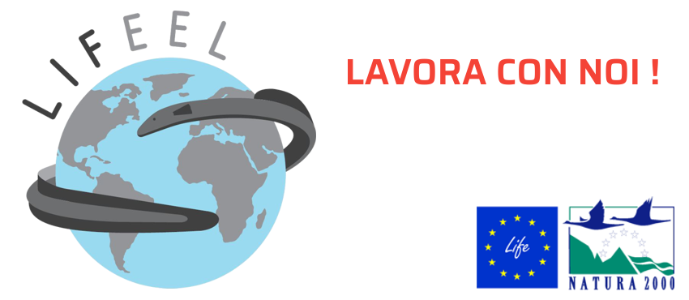

News ·
Sono aperte le selezioni per la posizione di Project Manager del Progetto LIFEEL!

Dopo aver superato la dura selezione a cui sono sottoposti i progetti finanziati dalla Comunità Europea, nell’ambito del Programma LIFE – Biodiversità, il Progetto LIFEEL è pronto a partire. G.r.a.i.a. S.r.l. è partner di questo importante progetto europeo il cui obiettivo è il sostegno al patrimonio di biodiversità del bacino del Fiume Po attraverso la conservazione di una delle specie più emblematiche per il bacino del fiume Po e per tutta Europa: l’Anguilla europea (Anguilla anguilla). Per conoscere maggiori dettagli sul Progetto collegati al sito lifeel.eu!
Nell’ambito di questo progetto sono aperte le selezioni per la posizione di Project Manager del Progetto LIFEEL (LIFE19 NAT/IT/000851). Puoi trovare tute le informazioni sulla procedura per l’invio della candidatura nella sezione “Lavora con noi” del sito del Progetto. La scadenza per la presentazione della domanda è fissata al 26 febbraio 2021.
Per qualsiasi informazione aggiuntiva o per richiedere il fascicolo di progetto, scrivi via PEC all’indirizzo: graia@pec.it